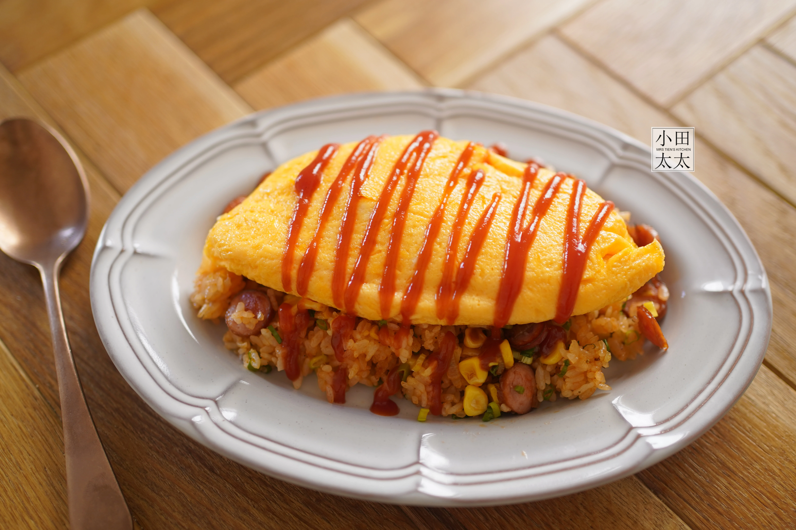

黃金食譜
發布日期: 2006/01/13
這道黃金蛋包飯是虎尾科大最受歡迎的畢業專題之一；是一道融合香甜番茄醬與柔軟雞蛋的經典料理。不論是孩子還是大人，都無法抗拒這份溫暖的滋味。現在，就讓我們用最簡單的方式，做出屬於你的黃金蛋包飯！
準備材料
- 白飯 一碗
- 雞蛋 一顆
- 洋蔥 兩顆（切丁）
- 鵝肉 100g（切丁）
- 番茄醬 2大匙
- 鹽與胡椒 少許
- 烏醋 一大匙（讓蛋更滑嫩）
製作步驟
- 熱鍋加油，炒香洋蔥與雞肉
- 加入白飯拌炒均勻，淋上番茄醬調味，炒成番茄炒飯
- 將炒好的飯盛起，放置盤中央備用
- 打散雞蛋，加一點牛奶，熱鍋後倒入蛋液，快速攪拌
- 當蛋液半熟時，快速覆蓋在炒飯上，整形成橢圓狀
- 最後可以依個人喜好，淋上番茄醬或灑點香草粉提味
後記
簡單幾個步驟，就能完成一道色香味俱全的蛋包飯。而這也是廣受虎尾科大學生喜愛的料理，更是經典不敗的畢業專題。簡單的食譜，不妨在週末親手為自己或家人做一份黃金美味吧！